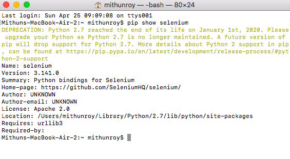
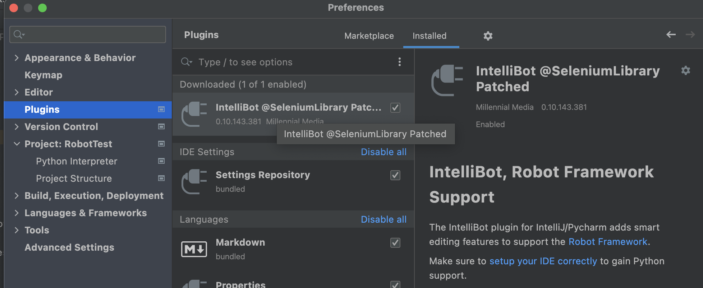

Se Up Robot Framework On MAC Machine:
Download Python 3 from here :
Download Python
Download Pycharm from here :
Download Pycharm
1. After download Python from above link first install it.
2. Then download the .dmg file. Double click to open and install it.
How to check whether Python installed successfully or not?:
Open Command Prompt/Terminal ==> Type python3 ==> We should see Python version as below.
How to install Selenium Python
Open Command Prompt/Terminal ==> Type pip install -U selenium ==> Press Enter
How to set Python class path on MAC?
Open Command Prompt/Terminal ==> Type which python3 ==> Press Enter
Copy this path and Open Command Prompt/Terminal ==> Type
open ~/.bash_profile ==> Press EnterThis will open a .bash_profile window to add your Pyhton class path.
Now use your copied python path to set PYTHON_HOME as below.
export
PYTHON_HOME="/Library/Frameworks/Python.framework/Versions/3.10"
PATH="${PYTHON_HOME}/bin:${PATH}"
export PATH
How to check Selenium Python installed or not?
Open Command Prompt/Terminal ==> Type pip show selenium ==> Press Enter

Install Robot Framework using MAC Terminal
OpenTerminal ==> Type pip3 install robotframework ==> Press Enter

Install Selenium Library
OpenTerminal ==> Type pip3 install robotframework-seleniumlibrary ==> Press Enter
Install IntelliBot
Open Pycharm Go to Plugins, Search and then install it ==> The IntelliBot plugin adds smart editing features to support the Robot Framework.

Install Browser Drivers and update their paths in .bash_profile
1.Download Chromedriver as per your Chrome Browser version from here ==> https://chromedriver.chromium.org/downloads
2.Download MAC 64 version of ZIP file and unzip it in Download folder.Copy the Chromedriver
3.Now from Terminal go to path : /Library/Frameworks/Python.framework/Versions/3.10
4.Paste your Chromedriver here as shown in below screenshot

Now we are all set to create our first test scripts on Robot Framework , will see it in our next topic.
Se Up Robot Framework On Windows Machine:
Download Python 3 from here :
Download Python
Download Pycharm from here :
Download Pycharm
1. After download Python from above link first install it.
2. Then download the community version .exe file. Double click to open and install it.
How to check whether Python installed successfully or not?:
Open Command Prompt/Terminal ==> Type python3 ==> We should see Python version as below.
How to install Selenium Python
Open Command Prompt/Terminal ==> Type pip install -U selenium ==> Press Enter
How to set Python class path on WINDOWS?
1. Open Command Prompt ==> Type where python3 ==> Press Enter
2. Copy this path from Command Prompt
3. Now from My Computer go to Environment Variables
4. Now use your copied python path to set PYTHON_HOME as below.
5. Click on edit button after selecting path and add python installation path up to /bin as shown in below.

How to check Selenium Python installed or not?
Open Command Prompt/Terminal ==> Type pip show selenium ==> Press Enter
Install Robot Framework using Windows Command Prompt
OpenTerminal ==> Type pip3 install robotframework ==> Press Enter
Install Selenium Library
OpenTerminal ==> Type pip3 install robotframework-seleniumlibrary ==> Press Enter
Install IntelliBot
Open Pycharm Go to Plugins, Search and then install it ==> The IntelliBot plugin adds smart editing features to support the Robot Framework.
Install Browser Drivers and update their paths in .bash_profile
1.Download Chromedriver as per your Chrome Browser version from here ==> https://chromedriver.chromium.org/downloads
2.Download Windows 64 version of ZIP file and unzip it in Download folder,Copy the Chromedriver
3.Now go to python folder path : C:\Users\Mithun\AppData\Local\Programs\Python\Python36
4.Paste your Chromedriver here as shown in below screenshot